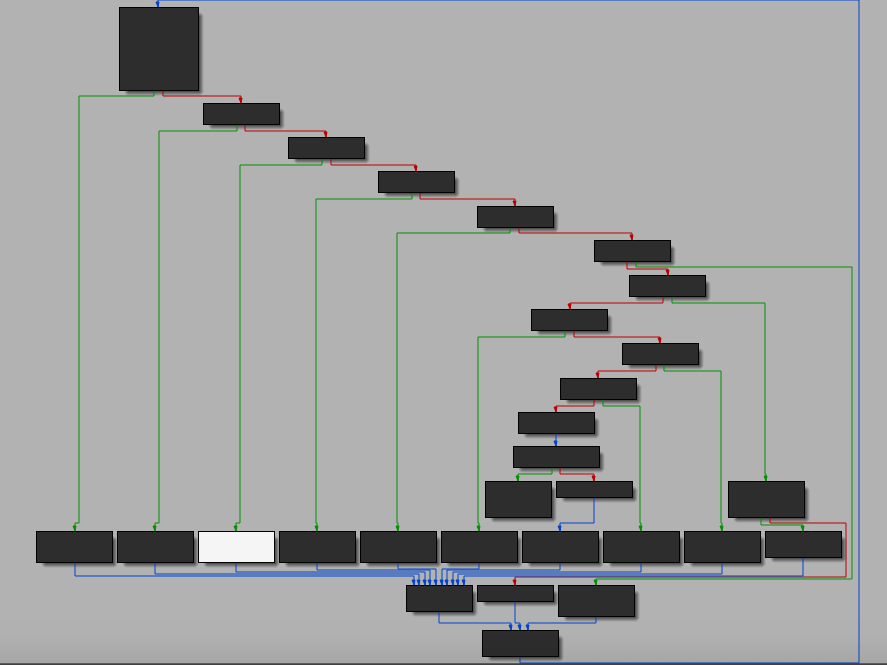

CrackMe:crckme-minivm
I recently got interested in code virtualization, and wanted to learn how to deobfuscate this type of technique. In order to learn more, I will attempt to solve a simple vm (virtual machine) crack me. We will be looking at miniVMCrackme1 by Craig Smith, which was published on June 9, 2008. It has a difficulty of 2, and was created to demonstrate how VMs work.
Before we get started, I will quickly go over code virtualization and virtual machine usage. Code virtualizaiton is an obfuscation technique. It uses a virtual machine (VM), a mechanism used to execute a different instruction set than the one used by machine that runs the program.
The Challenge
Find a valid password, write a solution detailing the techniques used to analyze the VM. Patching is not allowed
The executable is desktop program, with a GUI. When the executable is run, a window appears with an input box. Upon entering a random string, “abcdefg”, a dialog box appears telling us that our password is incorrect.
Static Analysis
The executable is a Windows application, since Win32 functions such as ShowWindow are listed in its imports. From the imports, I looked at where GetWindowTextLengthA is called. It was called in DialogFunc, which contains the operations relating to the GUI.
—
The GetWindowTextLengthA function was called to check if what was entered in the input box is not empty ( jumps if below or equal to one). If it was, then it jumps to loc_40190E, jumping to the end of our DialogFunc. Otherwise, it continues to the following block of code:
push offset unk_403034 ; lParam
push 14h ; wParam
push 0Dh ; Msg
push dword_403030 ; hWnd
call SendMessageA
mov eax, offset unk_403049
mov dword ptr [eax], offset unk_403034
push offset dword_4016BC
push offset unk_403049
call CallVm_401000
mov eax, offset unk_403049
mov eax, [eax]
mov ebx, offset ShowResult
add ebx, eax
call ebx
(sidenote: some functions have already been renamed)
It seems that this is where the virtual machine operation is located. The bytecode of the virtual machine (dword_4016BC), and unk_403049- that stores our input string (password) are pushed to the stack. After that, CallVm_401000 is called.
CallVm_401000 proc near
pop ebx
pop eax
mov dword_40301C, eax
pop eax
mov dword_403010, eax
mov dword_403014, eax
pusha
mov dword_403020, 0
mov dword_403018, 0
call sub_40102F
popa
push ebx
retn
CallVm_401000 endp ;
The pop instruction retrieves what was pushed in the stack. Earlier, dword_4016BC containing our bytecode, and unk_403049 containing our input string was pushed to the stack. These values are stored in the virtual registers of the virtual machine.
We can assume that the virtual registers are: dword_40301C, dword_403010, dword_403014, dword_403020, and dword_403018 . After looking at each of their cross references, we can see that these values are used like registers.
Let us take a look at its control flow graph of sub_40102F , which is called.

Figure 1: Control Flow of VM
We see the graph has a central basic block, as apparent on the top-most left corner. This is the dispatcher which directs the control flow to individual basic blocks called handlers.
sub_40102F proc near ; CODE XREF: CallVm_401000+27↑p
.text:0040102F ; sub_40102F:loc_40107C↓j
.text:0040102F mov ebx, dword_403010
.text:00401035 xor eax, eax
.text:00401037 xor ecx, ecx
.text:00401039 xor edx, edx
.text:0040103B mov al, [ebx]
.text:0040103D mov dl, al
.text:0040103F and dl, 0Fh
.text:00401042 and al, 0F0h
.text:00401044 cmp al, 0C0h
.text:00401046 jz short loc_40107E
.text:00401048 cmp al, 0B0h
.text:0040104A jz short loc_401085
.text:0040104C cmp al, 0D0h
.text:0040104E jz short loc_40108C
.text:00401050 cmp al, 0E0h
.text:00401052 jz short loc_401093
.text:00401054 cmp al, 0
.text:00401056 jz short loc_40109A
.text:00401058 cmp al, 10h
.text:0040105A jz short loc_4010A1
.text:0040105C cmp al, 20h ; ' '
.text:0040105E jz short loc_4010A8
.text:00401060 cmp al, 30h ; '0'
.text:00401062 jz short loc_4010B6
.text:00401064 cmp al, 50h ; 'P'
.text:00401066 jz short loc_4010BD
.text:00401068 cmp al, 60h ; '`'
.text:0040106A jz short loc_4010C4
.text:0040106C cmp al, 40h ; '@'
.text:0040106E jnz short sub_4010D3
.text:00401070 cmp dl, 3
.text:00401073 jz short locret_4010D2
.text:00401075 jmp short loc_4010CB
Looking at this assembly code, we can know that the logic continues based on the bytecode, or opcode. Before control flow is redirected to a different handler, the bytecode must meet a certain condition in order to execute.
For example, if al is equal to 0C0h, it will short jump to loc_40107E.
.text:0040107E loc_40107E: ; CODE XREF: sub_40102F+17↑j
.text:0040107E call sub_4010F8
.text:00401083 jmp short loc_401077
It calls the handler we will have to reverse sub_4010F8. The handler will contain the code that will execute for the specific bytecode of 0C0h
Dynamic Analysis
Usually, a virtual machine works by iterating the bytecode array and decoding the corresponding instruction. Analyzing the program with a debugger will help us confirm our assumptions.
.text:004016BC dword_4016BC dd 0CBB039h, 0CA000000h, 0
.text:004016BC ; DATA XREF: DialogFunc+B4↓o
.text:004016C8 dd 0FF4042h, 0D80000h, 20000000h, 26h, 0E93B3063h, 0C10B0h
.text:004016C8 dd 9AC80000h, 3000002h, 0D8h, 3C2000h, 10320000h, 42h
.text:004016C8 dd 18CAh, 4E433200h, 61686F65h, 73697370h
.text:00401708
Earlier, we know that dword_4016BC contains our bytecode. The logic continues based on each opcode.
Disasembler
We can try to create a disassembler to show how the virtual machine works.
data = "39b0cb00000000ca000000004240ff000000d800000000202600000063303be9b0100c000000c89a02000003d800000000203c000000321042000000ca180000003243"
arr, i= [],0
for x in range(0, len(data), 2):
arr.append(int(data[x:x+2], 16))
while i < len(arr):
instr = arr[i]
if instr == 0x39:
print('MOV R2, [R8 + R7]')
print("MOV R7, 4")
i+= 1
if instr == 0xb0:
print("MOV R1, R2")
i+= 1
# +5
if instr == 0xcb:
print("MOV R4, " + hex(arr[i+1]))
i+= 5
if instr == 0xca:
print("MOV R3, " + hex(arr[i+1]))
i+= 5
if instr == 0x42:
print("MOV R1, [R1]")
i+= 1
if instr == 0x40:
print("AND R1, " + hex(arr[i+1]))
i+= 5
if instr == 0xd8:
print("CMP R1, " + hex(arr[i+1]))
i+= 5
if instr == 0x20:
print("JNZ R6 + " + hex(arr[i+1]))
i+=5
if instr == 0x63:
print("ADD R1, R4")
i += 1
if instr == 0x30:
print("SUB R7, 4")
print("MOV [R8+R7], R1")
i += 1
if instr == 0x3b:
print("MOV R4, [R8 + R7]")
print("ADD 7, 4")
i += 1
if instr == 0xe9:
print("INC R2")
i += 1
if instr == 0x10:
print("JMP R6 + " + hex(arr[i+1]))
i += 5
if instr == 0xc8:
print("MOV R1, " + hex(arr[i+1]))
i+= 5
if instr == 0x03:
print("XOR R1, R4")
i += 1
if instr == 0x32:
print("SUB R7, 4")
i += 1
if instr == 0x43:
print("ret")
i += 1